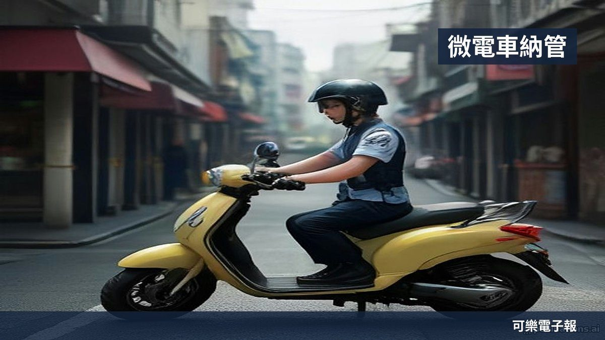

微電車毒駕暴增717% 修法沒入車輛、拒測罰27萬

可樂電子報小編/編輯
微型電動二輪車毒駕案件今年暴增，交通部決定下重手。交通部在立法院交通委員會報告指出，已與警政署研商修正《道路交通管理處罰條例》，讓微電車的毒駕、拒檢與拒測比照汽機車處罰，並增訂沒入車輛、扣繳牌照規定；修正草案預計11月底陳報行政院核轉立法院審議，最快明年上路。

根據警政署統計，今年1至9月微電車毒駕580件，較去年同期71件暴增717%；酒駕1,891件、年增17%；拒測1,812件、年增23%。交通部說明，去年11月19日起警方可用毒品唾液快篩現場檢測，過去不易即時攔查的毒駕無所遁形，查獲件數因此明顯上升，也讓微電車長期被戲稱為「酒駕專用車」的問題浮上檯面。
現行微電車屬於「慢車」，拒測只罰4,800元，酒駕或毒駕罰1,200至2,400元，與汽機車動輒數十萬元差距極大。修法若通過，拒測初犯將重罰27萬元、10年內第2次45萬元，第3次起每次再加18萬元且累加無上限；毒駕則比照汽機車罰鍰（機車12萬元、汽車15萬元），並得沒入車輛、扣繳牌照。

微電車自111年11月30日納管、113年11月30日全面掛牌。公路局統計，截至今年8月底已有46萬3,771輛完成登檢領照，但民間推估實際上路數量可能接近百萬輛。警方取締件數從2023年1萬4,916件增加到2025年5萬6,580件；今年1至6月微電車30日死亡30人，較去年同期18人增加約67%。
問題核心在於免考照、滿14歲就能上路。臺灣交通安全協會理事長陳宏益指出，微電車性能與機車相近，新手卻沒有基本用路知識與訓練，還可能成為酒駕、超速被吊銷駕照者改騎的「後門」。交通部已與教育部合作，把「微電車安全騎乘教育」納入國高中交通安全課程，今年起補助縣市政府推動。

立法院11月4日已有委員提案，把改裝微電車罰鍰由3,600至7,200元提高到5,400至12,000元，協助改裝的業者罰7,200至18,000元，未滿14歲騎乘罰1,200至3,600元並得沒入車輛。臺北市也自今年1月1日起全日禁止微電車行駛人行道及自行車道。車主該做的是：完成掛牌、按時續保強制險、不改裝、戴安全帽、不載人、不酒駕毒駕。
🌟 掌握花蓮在地第一手資訊・歡迎訂閱追蹤
深度紀實報導、在地精采影音專題，第一時間接收最新消息！